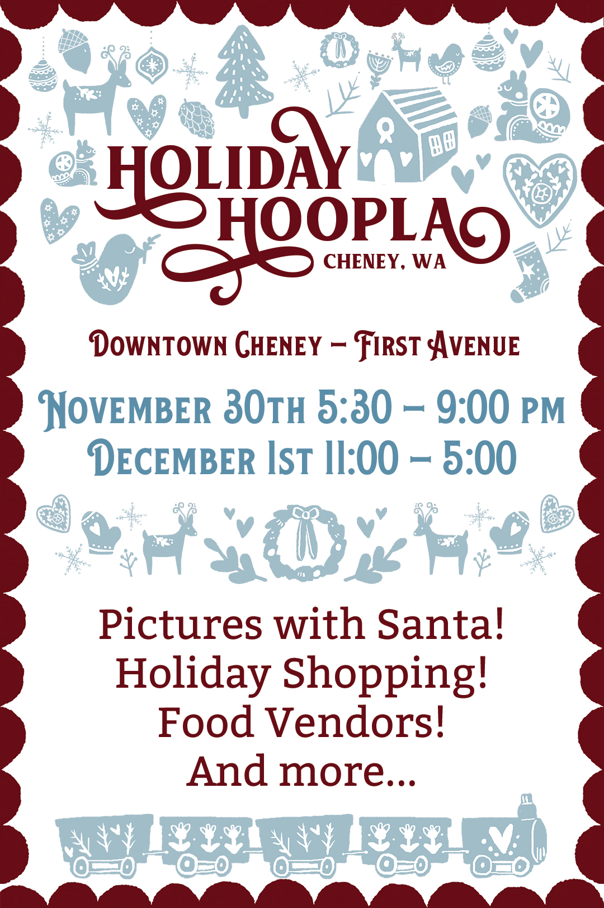
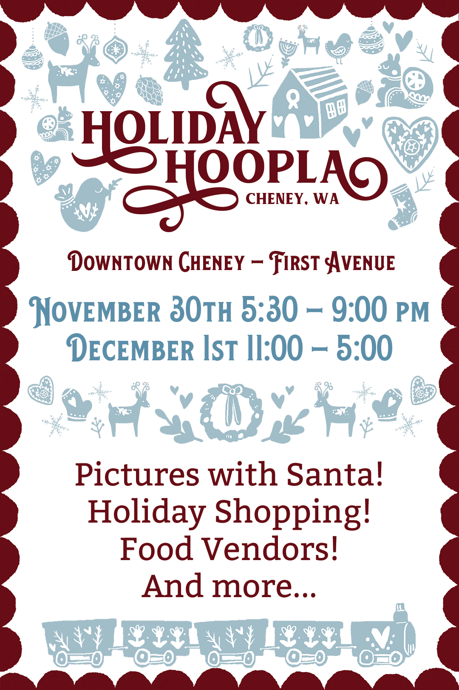

Kevin D. Looney
Designer
Print.
Web.
Digital.
 back
back
Holiday Hoopla Contest 2018

 


Project created with:
- Photoshop
- Illustrator
- InDesign
This project was done as part of a group project at EWU for the Cheney Chamber of Commerce. The contest was to create the logo and branding for the town's 'Holiday Hoopla' celebration.
The look of the designs was inspired by Scandinavian holidays as well as items that were local to Cheney.